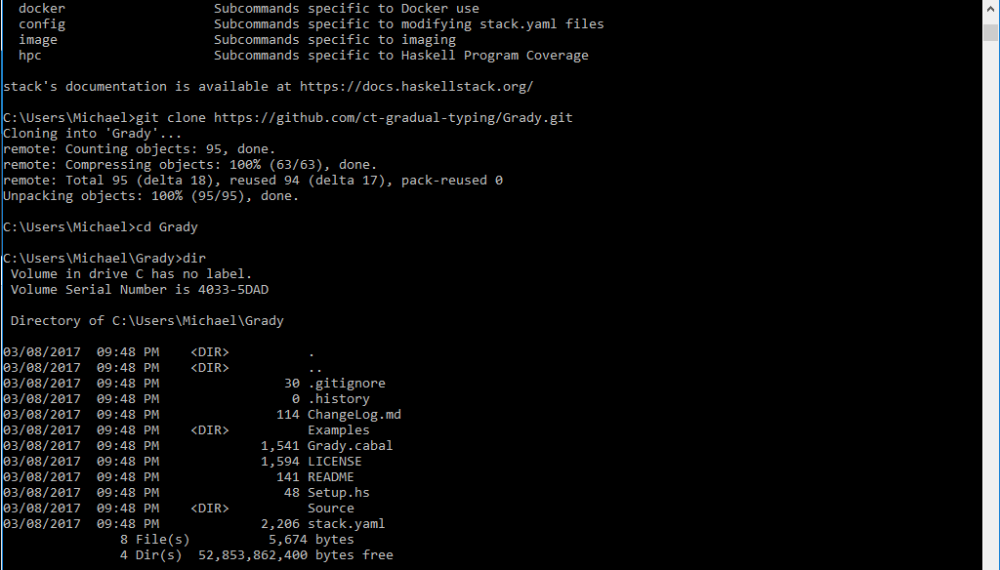
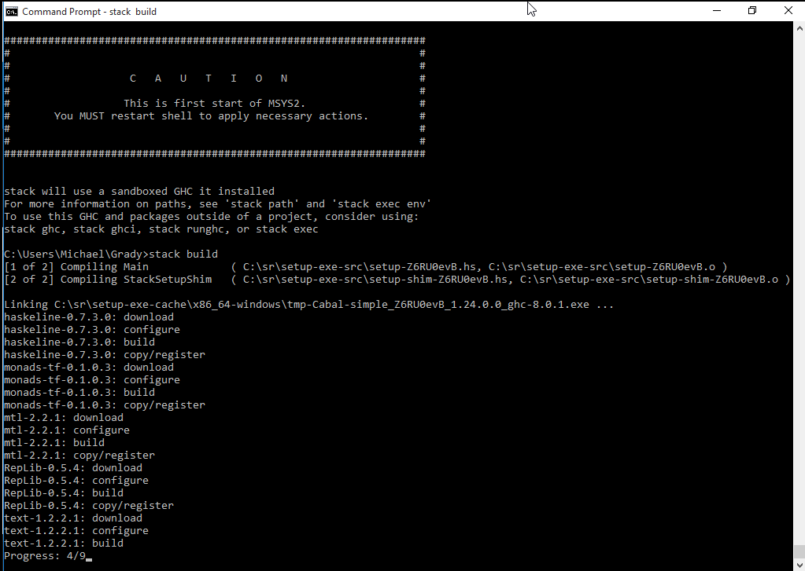
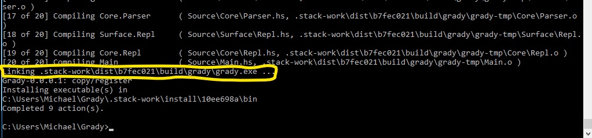
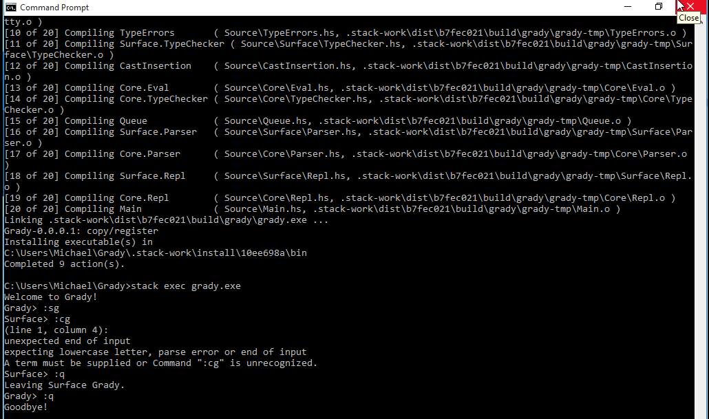

Grady Installation
Clone Repo
Clone the Grady repo from Github. You can find the link here.
Stack Installation
The installation of Grady has been tested on Windows 10 Enterprise Edition, Mac OS 10.11.6 El Capitan, Ubuntu 16.04.2 LTS. In each situation the stack commands are the same. You can download stack here.
Building the Project
Navigate to the directory containing the Grady project. You must be inside the Grady folder where you can see the stack.yaml file.
Now type the command "stack setup". This should set up the stack environment based on the stack.yaml file. It will need to download several things so be patient.
Next type the command "stack build".
After the build is completed you will be shown the path where the executable is held. In the picture below, this is circled in yellow.
The last step is to run the newly made exectuable in the stack environment. Use the command "stack exec <executable name>". Here that is "stack exec Grady.exe" or just "stack exec Grady".
